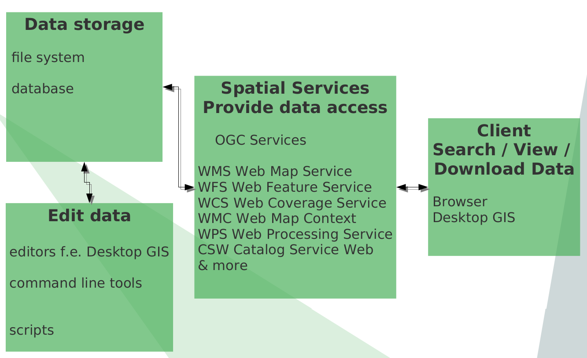
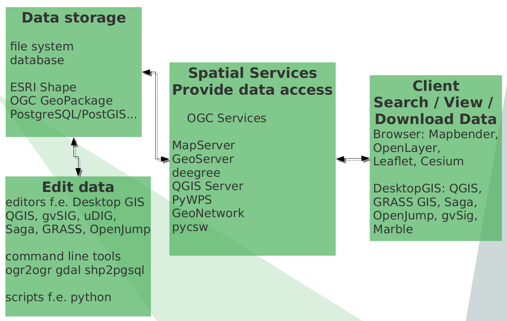
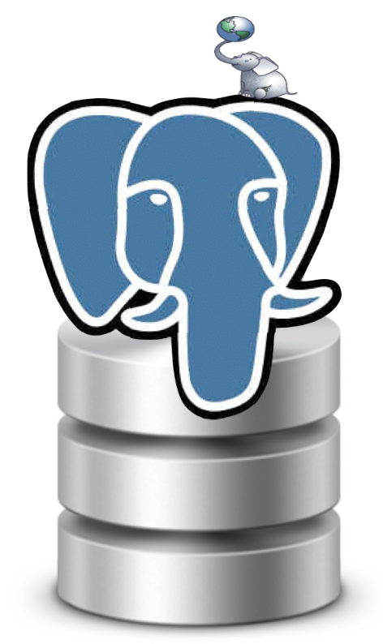
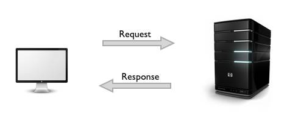
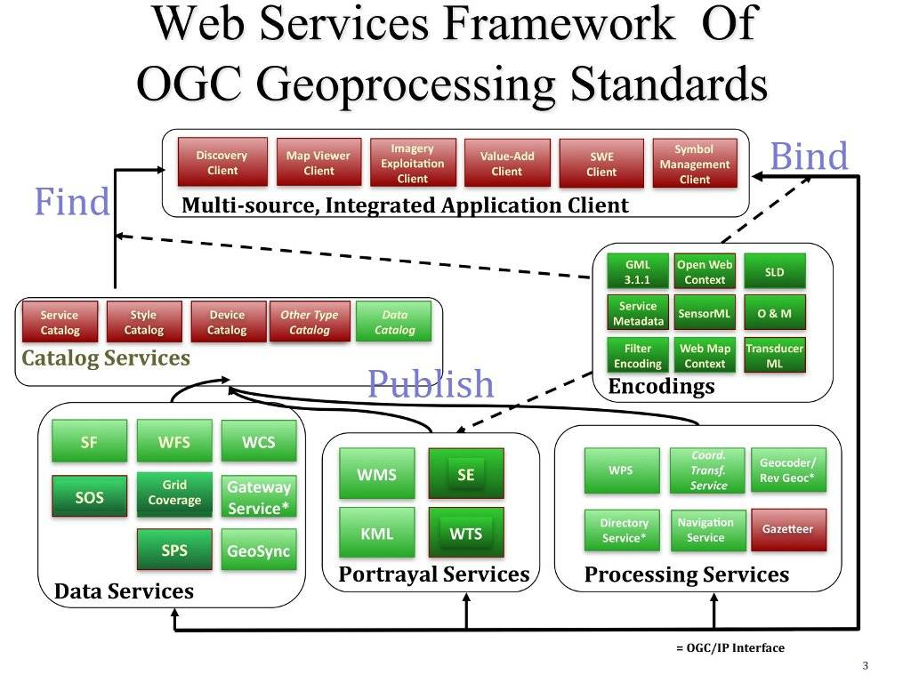
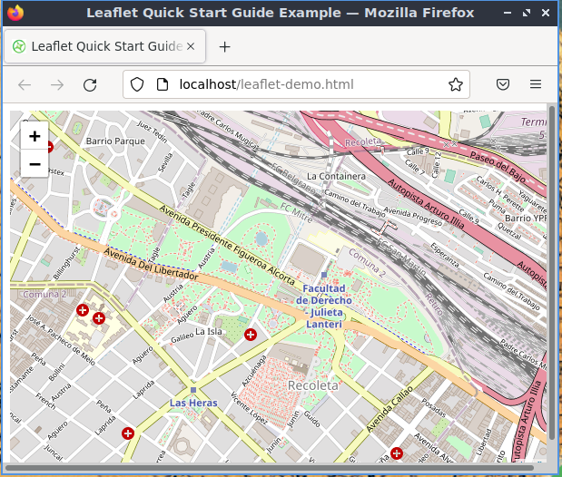
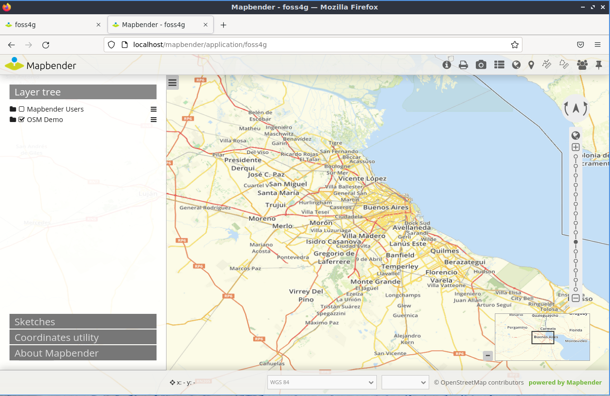
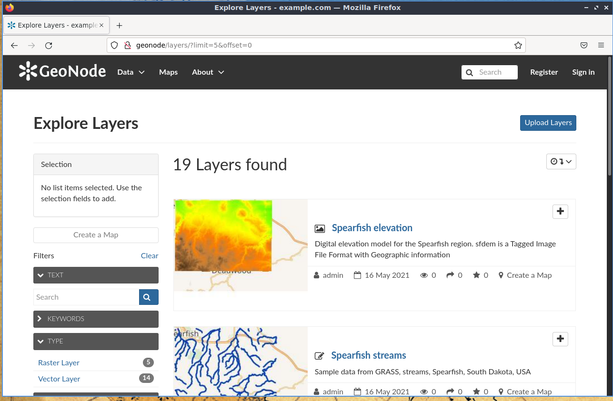

Setting up a Spatial Data Infrastructure (SDI) with Open Source Software using OSGeoLive
Astrid Emde, Enock Seth Nyamador, Nicolas Roelandt, Angelos Tzotzos

SDI Workshop
- What is a Spatial Data Infrastructure (SDI)
- Components of an SDI
- Data
- Services & OGC Standards
- Clients
- Metadata
- Get to know OSGeo Software
Workshop with OSGeoLive
OSGeoLive 15 rc1 (August 2022)
- http://live.osgeo.org
- Download Data & Presentation http://trac.osgeo.org/osgeolive/wiki/Live_GIS_Workshop_Install
What is a SDI?
What is a SDI?
"A spatial data infrastructure (SDI) is a data infrastructure implementing a framework of geographic data, metadata, users and tools that are interactively connected in order to use spatial data in an efficient and flexible way. Another definition is "the technology, policies, standards, human resources, and related activities necessary to acquire, process, distribute, use, maintain, and preserve spatial data".
Source: Wikipedia https://en.wikipedia.org/wiki/Spatial_data_infrastructure
SDI
- Data infrastructure that provides geographic data and metadata
- Data network to exchange data
- Data producer and data user are connected via a physical network f.e internet / intranet it is accessible for several users
- Users can use different tools for different processes
- It helps you to make data accessible, maintainable and findable throughout your organization
- Increases efficiency and flexibility
SDI Components
- Exercise 1: Please assign Open Source Software to the components of a SDI. See https://live.osgeo.org

SDI Components

Data - Status
- Users work with different data
- Different formats
- Different tools to view and edit
- Data can be spread and copied
- Data can have different versions that are in use
Data
Goals
- Central data storage
- Editing does not have to take place always in the central data storage, but define how to exchange
- Easy import & export
- Flexible visualisation with different tools
- Data storage with defined access
- Data storage with authentification/authorisation and multi user access
- Data history
Data
Goals
First Goal: create your first data storeDatabase
PostgreSQL & PostGIS

PostgreSQL/PostGIS
- Supported by several other programs and programming languages
- Fast, powerful, reliable, robust, easy to maintain
- PostGIS is an extension for PostgreSQL
- Let PostGIS do the work - not your Desktop GIS
- Follows standard - OGC Simple Feature Specification for SQL and ISO SQL/MM Specification
- Provides many spatial functions
- Control access to your data
Exercise 2: Create Spatial Database in PostgreSQL
- Open Database Client pgAdmin 4 (PhpPgAdmin in the ISO)
- Create database: context menu on database → new database → name foss4g
- Load postgis Extension
- Context menu on database foss4g → new object → new extension → name: postgis
Data
Goals
- First Goal: centralized data storage
- Second Goal: Easy import & export of data
- Third Goal: Flexible visualisation with different tools
Exercise 3: Get to know QGIS
Load Natural Earth data (Shapes) in Desktop GIS QGIS
- Find the data at /home/user/data/natural_earth2/ne_10m_admin_1_states_provinces_shp.shp
- Provinces of Italy
- Filter show only admin = 'Italy'
- Label with column name
Data import from QGIS to PostgreSQL
You can import Shape to PostgreSQL via
- QGIS DB Manager
- or
- shp2pgsql
- ogr2ogr
- python
- ...
Create a new PostgreSQL Connection in QGIS

QGIS DB Manager
- Easy Import / Export
- Supports many data formats
- Visualize your data
- Show & edit table structure
- Create index
- Vacuum / Analyze
QGIS DB Manager Import

Exercise 4: Import & Export
- Import provinces from Natural Earth data (only Italy)
- Import populated places from Natural Earth data (only Italy)
- Add the table from your database to your QGIS project (drag & drop)
- Export: Save populated places as geopackage via DB Manager or via QGIS save as ...
Data
Goals
- First Goal: centralized data storage
- Second Goal: Easy import & export of data
- Third Goal: Flexible visualisation with different tools
- Fourth Goal: Defined access to data
PostgreSQL roles
- PostgreSQL has roles
- groups
- User with login
- You can give access to databases, schema, tables, views … to roles
- Write or read access
Create roles in PostgreSQL
- Create role, create login role
- Give read access to table places
- Give write access to table countries
Exercise 5: Control data access
- Create a role workshop_read and workshop_writer
- Create a login role robert with a password and add to workshop_reader
- Create a new login role wilma and add wilma to the workshop_writer role
- Grant read access to table places to your new role workshop_reader
- Grant write access to table countries to your new role workshop_writer
- Try to access and edit via QGIS
Exercise 5: Control data access
How it works...
CREATE ROLE workshop_reader;
CREATE ROLE workshop_writer;
CREATE ROLE robert WITH LOGIN PASSWORD 'foss4g';
GRANT workshop_reader TO robert;
CREATE ROLE wilma WITH LOGIN PASSWORD 'foss4g';
GRANT workshop_writer TO wilma;
Exercise 5: Control data access
How it works...
GRANT SELECT ON places to workshop_reader;
-- change to user robert
Select * from places;
-- change to user user
GRANT ALL ON countries to workshop_writer;
GRANT USAGE ON SEQUENCE countries_gid_seq TO workshop_writer;
-- change to user wilma
Select * from countries;
Update countries set name = 'TEST' WHERE name = 'Italy';
Service

Provide Data via OGC Services
Goals
- Provide Data in the web - Intra- or Internet
- Provide data via standards that many tools support
- Provide INSPIRE conform Services in Europe
- OGC WMS Web Map Service – show data and get information (advantage: styling is already defined)
- OGC WFS Web Feature Service - download service, provide data, edit data

https://live.osgeo.org/archive/10.5/en/standards/standards.htmlOSGeo Software with OGC WMS Support
OGC WMS – map service, provide maps as raster, information as html, plain text, GML
- MapServer
- GeoServer
- QGIS Server
- deegree
- MapProxy
OSGeo Software with OGC WFS Support
OGC WFS – feature service, data access f.e. via GML
- MapServer
- GeoServer
- QGIS Server
- deegree
- MapProxy
Provide Data via OGC Services
Goals
- First Goal: Provide Data in the web - Intra- or Internet
- Provide data via standards that many tools support
- OGC WMS Web Map Service – show data and get information (styling is already defined)
WMS example with QGIS Server
Publish your data via QGIS Server as WMS
- Menu → Project → Project properties → OWS Server
- Name and title, extent, layer access (make sure you saved the password for your database access)
- GetCapabilities-Request
http://localhost/cgi-bin/qgis_mapserv.fcgi?MAP=/usr/local/share/qgis/service_wms.qgz&SERVICE=WMS&VERSION=1.3.0&REQUEST=GetCapabilities
Exercise 6: WMS example with QGIS Server
Publish your data via QGIS Server as WMS
- Publish your data via QGIS Server as WMS
- Create a WMS with two layers countries and places – style them nicely with labeling
- Save your project at: /home/user/service_wms.qgs
- Load your WMS in an empty QGIS project
- Load also WMS http://localhost/cgi-bin/qgis_mapserv.fcgi?&MAP=/usr/local/share/qgis/QGIS-NaturalEarth-Example.qgz&SERVICE=WMS&VERSION=1.3.0&REQUEST=GetCapabilities
Exercise 7: Load external Services to QGIS
- http://localhost/cgi-bin/qgis_mapserv.fcgi?map=/usr/local/share/qgis/QGIS-NaturalEarth-Example.qgz&SERVICE=WMS&VERSION=1.3.0&REQUEST=GetCapabilities
- http://osm-demo.wheregroup.com/service?REQUEST=GetCapabilities&Service=WMS&Version=1.3.0
- TopPlus Open https://sgx.geodatenzentrum.de/wms_topplus_open?request=GetCapabilities&service=wms
- ISPRA WMS http://portalesgi.isprambiente.it/lista-servizi-wms/Geological%20Maps
- Regione Toscanahttps://www.regione.toscana.it/-/geoscopio-wms
- Geoportale Nazionalehttp://www.pcn.minambiente.it/mattm/servizio-wms/
- INSPIRE Geoportalhttps://inspire-geoportal.ec.europa.eu/
How to spread your service in the web?
- Refer to your GetCapabilities-Urls
- Add your GetCapabilities & Metadata in a Metadata catalog
- Offer your WMS in WebGIS Client in a ready to use application for example OpenLayers, Leaflet, Mapbender, GeoMoose, MapStore, QGIS Map Client 2
Provide Services with Leaflet
- Open the leaflet demo
- Add things to it
- Bounding box
- WMS SERVICE

Exercise 8: Leaflet
- Copy paste leaflet files from /var/www → desktop
- Fix libraries URLs
- Fix coordinates to Firenze 43.779 11.249
var map = L.map('map').setView([43.779,11.249], 15);
L.tileLayer('http://{s}.tile.openstreetmap.org/{z}/{x}/{y}.png',{}).addTo(map);
//In case we are offline, start TileStache to get a base layer
L.tileLayer('http://localhost:8012/example/{z}/{x}/{y}.png',{}).addTo(map);
var marker = L.marker([43.779,11.249]).addTo(map);
var circle = L.circle([43.777,11.242], 250, {
color: 'red',
fillColor: '#f03',
fillOpacity: 0.5
}).addTo(map);
var polygon = L.polygon([
[43.778,11.252],
[43.776,11.258],
[43.775,11.250]
]).addTo(map);
var popup = L.popup()
.setLatLng(43.779,11.249])
.setContent("FOSS4G 2022 is here this year!")
.openOn(map);
Exercise 9: Leaflet
- Add WMS service
- Add your QGIS server WMS to leaflet
// add new layer from WMS service
var topo = L.tileLayer.wms('http://ows.mundialis.de/services/service?', {
layers: 'TOPO-OSM-WMS'
}).addTo(map);
// define basemaps
var baseMaps = {
"OpenStreetMap": osm,
"OSM Topo": topo
};
// Add a layer control button
var layerControl = L.control.layers(baseMaps).addTo(map);
Provide Services in a Geoportal for example Mapbender
- http://localhost/mapbender/
- Login via: root / root
- Provide Applications for different needs

Publish WMS in Mapbender
- Menu → New DataSource
- Load GetCapabilities Url
Exercise 9: Load WMS in Mapbender
- Load your QGIS WMS and some other WMS in Mapbender
- http://localhost/cgi-bin/qgis_mapserv.fcgi?map=/usr/local/share/qgis/QGIS-NaturalEarth-Example.qgz&SERVICE=WMS&VERSION=1.3.0&REQUEST=GetCapabilities
- http://osm-demo.wheregroup.com/service?REQUEST=GetCapabilities&Service=WMS&Version=1.3.0
- http://localhost/cgi-bin/qgis_mapserv.fcgi?map=/usr/local/share/qgis/QGIS-NaturalEarth-Example.qgz&SERVICE=WMS&VERSION=1.3.0&REQUEST=GetCapabilities
- TopPlus Open https://sgx.geodatenzentrum.de/wms_topplus_open?request=GetCapabilities&service=wms
- ISPRA WMS http://portalesgi.isprambiente.it/lista-servizi-wms/Geological%20Maps
- Regione Toscanahttps://www.regione.toscana.it/-/geoscopio-wms
- Geoportale Nazionalehttp://www.pcn.minambiente.it/mattm/servizio-wms/
- INSPIRE Geoportalhttps://inspire-geoportal.ec.europa.eu/
Exercise 10: Create a new Application in Mapbender
- Your application should start with the extent of Firenze
- Copy Application mapbender_user and rename it to FOSS4G
- Switch to Layout → map-Element and set SRS EPSG:4326
- Modify MAX EXTENT to Italy lower left -180 -90 upper right 180 90
- Modify Start Extent Firenze lower left 9.249264,41.779160 upper right 13.249264,45.779160
- Modify the scales to: 100000000,50000000,10000000,5000000,1000000,500000,100000,50000,25000,10000,7500,5000,2500,1000,500
Exercise 11: Add Services to your application
- Your application should show your QGIS WMS and some other external WMS
- Go to Tab Layerset
- Add WMS via +
Metadata Catalog to find your data
Goals
- Your user should find your data
- Provide a catalog for you data
Provide Metadata for your data and Services
- Metadata should be provided & has to be up-to-date
- OGC Catalogue Service Web (CSW) GeoNetwork, GeoNode, pycsw, Metador
- for example in Germany: GDI-DE & 16 Catalogues for 16 provinces
- for example in Greece: http://geodata.gov.gr/
Exercise 11: Search in the Italy Metadata Catalog for a Service
- Agency for Digital Italy: https://geodati.gov.it/geoportale/eng/
Exercise 12: Add your new QGIS WMS to GeoNode or GeoNetwork
- Open GeoNode and login via admin/admin
- Add a new Metadata entry for you WMS
- Follow the quickstart: https://live.osgeo.org/en/quickstart/geonode_quickstart.html

Wrap things up
- Central data storage in a database offers lot of advantages
- Data Sharing via Services is easy and supported by many programs
- Offering ready-to-use applications covers the needs of many not advanced users
- Metadata helps you to find the data you need
- Metadata should be up-to-date
- A SDI is a profit for all involved parties
FOSS4G 2022 Firenze
We hope you enjoyed the workshop
https://talks.osgeo.org/foss4g-2022-workshops/talk/XVFSWH/